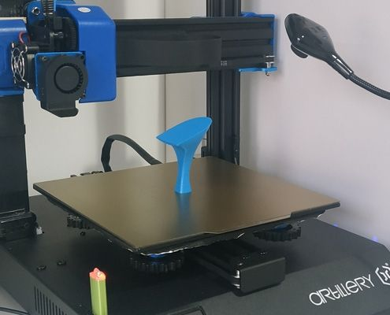
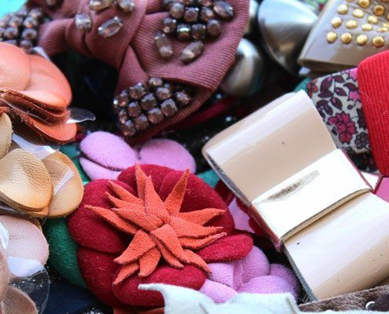

Ultimas Noticias sobre la moda
En Z&C ZAPATOS & CO, ponemos a disposición de nuestros clientes, la oportunidad de conocer todo el proceso de elaboración de un zapato de calidad desde 0, paso a paso y de la forma más sencilla.
Sobre el mundo
LAS CLAVES DE LA IMPRESIÓN 3D PARA CALZADO
Nov 12
Las nuevas tecnologías evolucionan a una gran velocidadspor lo que siempre hemos considerado que la impresión 3D.
sigue leyendo

Sobre el mundo
5 ZAPATILLAS DEPORTIVAS «MADE IN CHINA»
Nov 11
Es conocido a nivel mundial que el gigante asiático tiene una de las principales industrias zapateras.
sigue leyendo
Sobre el mundo
JOYAS PARA EL CALZADO
Nov 11
Continuamos con nuestra serie de post de Historias del Calzado hablando de una mujer entregada desde muy pequeña a nuestra industria zapatera.
sigue leyendo

Sobre el mundo
ZAPATOS CON ANCHOS ESPECIALES.
Nov 11
Esta semana recibimos un correo electrónico con la consulta de una de nuestras lectoras.
sigue leyendo